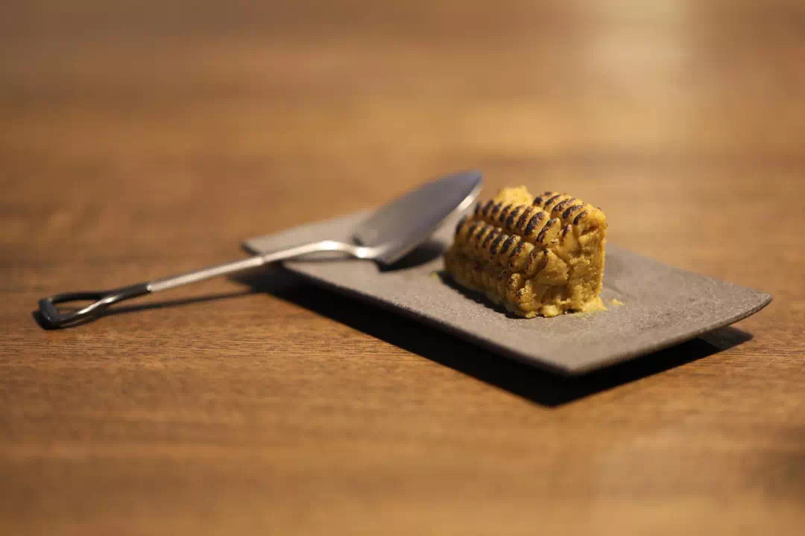

Food
Eateries Around the World
Eateries


Ice cream desert, and brown butter chocolate cupcake. This recipe is part of The Simple Vegan Cookbook by Martha Stewart & Co.
Feb 14, 2021
Tsukiji, an island popular with the locals for its abundant seafood and traditional Japanese cooking.
Feb 15, 2021
Diners at Ojai Valley can expect attentive staffs who are committed to their customers’ happiness.
Feb 18, 2021
Located in a bustling bar area, Omiyagi is a perfect spot for casual dates or any other social events.
Feb 19, 2021
Salmon dishes, which include lamb kimchi and fried fish, as well as a selection of handcrafted souvenirs.
Feb 21, 2021
How to make matcha better - an elaborate tutorial by The Rundown On Recipe Madness.
Mar 1, 2021